Detector de Mentiras com Arduino
"A tecnologia consegue identificar alterações causadas por uma mentira?"
Um projeto experimental que utiliza Arduino, o sensor de pulso KY-039, um display OLED e dois botões para monitorar alterações na frequência cardíaca durante diferentes perguntas e situações.
Conheça o projetoSobre o Projeto
O que é: este projeto usa um Arduino ligado a um sensor infravermelho de pulso (KY-039) para observar, em tempo real, como a frequência cardíaca de uma pessoa reage a diferentes perguntas.
Objetivo: investigar se é possível perceber, por meio de sinais fisiológicos simples, alterações associadas a situações de tensão — como responder a uma pergunta inesperada.
Por que esse tema: une três áreas que despertam curiosidade — eletrônica, programação e o funcionamento do corpo humano — em um experimento visual e fácil de entender.
Como surgiu a ideia: a partir de detectores de mentira (polígrafos) usados em investigações, buscamos entender e reproduzir, de forma simplificada e educativa, o princípio por trás desses aparelhos.
Qual problema demonstra: o projeto mostra que sinais do corpo podem indicar estresse ou nervosismo — mas não provam, sozinhos, que alguém está mentindo.
Ciência
Observação de sinais fisiológicos e formulação de hipóteses testáveis.
Eletrônica
Captação do sinal analógico do KY-039, com resultado mostrado em um display OLED.
Programação
Leitura, processamento e exibição dos dados coletados pelo sensor.
Como Funciona
Pessoa
A pessoa responde às perguntas durante o teste.
Sensor
O KY-039 detecta o pulso no dedo usando luz infravermelha.
Arduino
O Arduino lê o sinal do sensor e acompanha os botões.
Processamento
O programa calcula o BPM médio antes e depois da pergunta e compara os dois.
Resultado
O display OLED mostra as alterações observadas.
Passo a passo do teste
- Standby. Ao ligar, o aparelho fica desligado, com os LEDs apagados. Aperta-se START.
- Média 1 (base). O LED amarelo acende e a pessoa coloca o dedo no KY-039. O Arduino mede o BPM médio durante 15 segundos.
- Pergunta. O amarelo pisca 3 vezes e o display mostra "FAÇA A PERGUNTA".
- Média 2 (resposta). O Arduino mede o BPM médio por mais 15 segundos, escondendo o valor no display.
- Análise. Os 3 LEDs acendem com "ANALISANDO...". Depois fica só um: vermelho se a média 2 for maior que a média 1 por mais de 3 BPM (mentira), verde caso contrário (verdade).
Componentes
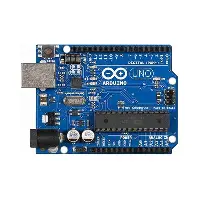
Arduino Uno
Microcontrolador responsável por receber os dados do sensor e executar o programa.
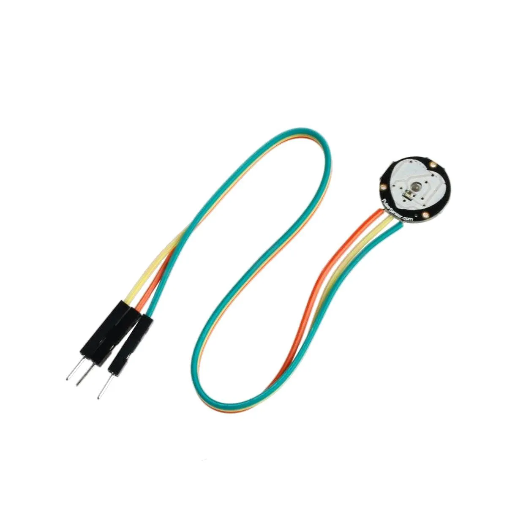
Sensor de pulso KY-039
Sensor infravermelho: o dedo fica entre um LED infravermelho e um fototransistor, que percebe a variação de luz a cada batimento e envia o sinal analógico ao Arduino.
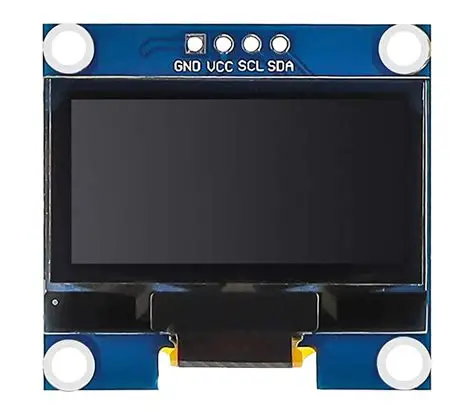
Display OLED SSD1306
Tela 128x64 ligada por I2C (SDA no A4, SCL no A5). Mostra o BPM, o tempo restante, as instruções e o resultado, sem depender do computador.
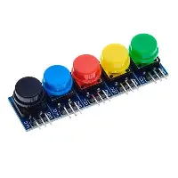
2 Botões
START/STOP (D3) liga e desliga o teste; REINICIAR (D2) recomeça o teste do zero. Usam o resistor pull-up interno do Arduino.
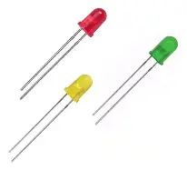
3 LEDs
Amarelo: teste em andamento. Verde: resultado "verdade". Vermelho: resultado "mentira".
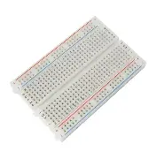
Protoboard
Placa de montagem usada para conectar os componentes sem solda.
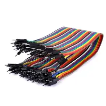
Jumpers
Fios usados para interligar o Arduino, o sensor, o display, os botões e a protoboard.
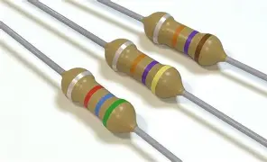
Resistores
Resistores de 220 Ω limitam a corrente e protegem os LEDs.

Computador
Utilizado para programar o Arduino e visualizar os dados coletados.
Custo do Projeto
Valores estimados com base em lojas de eletrônica no Brasil. Os preços podem variar conforme a loja, a região e a marca de cada componente — pesquise antes de comprar.
| Componente | Qtd. | Valor estimado |
|---|---|---|
| Arduino Uno | 1 | R$ 35,00 |
| Sensor de pulso KY-039 | 1 | R$ 40,00 |
| Display OLED | 1 | R$ 35,00 |
| Botões (push button) | 2 | R$ 2,00 |
| Protoboard 400/830 pontos | 1 | R$ 20,00 |
| Kit de jumpers (macho-macho) | 1 | R$ 12,00 |
| LEDs (vermelho, amarelo, verde) | 3 | R$ 3,00 |
| Resistores variados | 5 | R$ 5,00 |
| Total estimado | R$ 152,00 | |
O computador usado para programar não entra na conta. Muitos desses componentes já existem em kits de eletrônica escolares ou podem ser emprestados e reaproveitados, o que reduz o custo final.
Tecnologia Utilizada
Arduino / C++
Linguagem baseada em C/C++ usada para programar o microcontrolador no Arduino IDE.
Por que foi utilizada? É a linguagem do Arduino IDE, permite controlar sensores, display e botões, processar dados recebidos, é adequada para projetos de eletrônica e automação, e conta com muitas bibliotecas e exemplos.
Sensor KY-039 e display OLED
O KY-039 entrega um sinal analógico lido pelo conversor do Arduino; o resultado é exibido no display OLED com as bibliotecas Adafruit SSD1306 e Adafruit GFX.
Por que foram utilizados? O KY-039 é um sensor de pulso barato e fácil de ligar ao Arduino, e o display OLED permite mostrar o resultado sem depender do computador.
Por que escolhemos essa tecnologia?
O Arduino foi escolhido por ser a ferramenta ideal para controlar o hardware e receber os dados do sensor KY-039.
Arduino / C++
Para controlar o sensor, o display OLED e os botões, e processar os dados.
Código do Projeto
Código real do Arduino: leitura do KY-039, cálculo do BPM, controle dos botões, LEDs e exibição no display OLED. O arquivo completo também está disponível para download (.ino).
// DETECTOR DE MENTIRAS (demonstracao) - versao 9 (START/STOP + REINICIAR)
#include <Wire.h>
#include <Adafruit_GFX.h>
#include <Adafruit_SSD1306.h>
const bool MODO_PLOTTER = true; // true = Serial Plotter; false = Serial Monitor
// ---------- Pinos ----------
const int PIN_SENSOR = A0;
const int LED_VERDE = 8;
const int LED_AMARELO = 9;
const int LED_VERMELHO = 10;
const int PIN_REINICIAR = 2;
const int PIN_START = 3;
// ---------- OLED ----------
const uint8_t OLED_ENDERECO = 0x3C; // se nao acender, tente 0x3D
Adafruit_SSD1306 display(128, 64, &Wire, -1);
bool temTela = false;
const bool TELA_APAGADA_NO_STANDBY = false; // true = tela totalmente apagada quando desligado
// ---------- Ajustes ----------
const unsigned long DURACAO_MEDIA1_MS = 15000;
const unsigned long DURACAO_MEDIA2_MS = 15000;
const unsigned long TEMPO_SUSPENSE_MS = 3000;
const float MARGEM_BPM = 3; // 0 = qualquer aumento vira mentira (teste 1 a 3)
const int MIN_BATIDAS = 6;
const bool MOSTRAR_BPM_FASE2 = false; // false = esconde o BPM durante a media 2 (suspense)
const bool DIAGNOSTICO = true; // (modo Monitor) mostra leitura/amp/batidas a cada 1 s
// ---------- Ajustes do sinal ----------
const unsigned long PERIODO_US = 5000; // 200 Hz
const unsigned long AQUECIMENTO_MS = 1500;
const int OVERSAMPLE = 8;
const float LIMIAR_MIN = 1.5;
const float SPIKE_MIN = 120.0;
const unsigned long BLOQUEIO_MS = 1000;
const unsigned long REFRATARIO_MS = 500; // evita dupla contagem da mesma batida
const unsigned long REARME_FORCADO_MS = 1800;
const float LIMIAR_FATOR = 0.55;
const float DESCIDA_FATOR = 0.55;
const float MIN_AMPLITUDE_BATIDA = 3.0;
const unsigned long SEM_DEDO_MS = 5000;
// ---------- Estado ----------
enum Fase { ESPERA, MEDINDO_1, MEDINDO_2, FIM };
Fase fase = ESPERA;
float filtro = 0, base = 0;
float ampMedia = 0, picoCiclo = 0;
bool armado = true;
bool candidatoBatida = false;
float picoCandidato = 0;
unsigned long tCandidato = 0;
unsigned long ultimaAmostra = 0, tLiberar = 0, tDiag = 0, tUltimaTela = 0;
unsigned long tUltimoPico = 0, tUltimaBatidaReal = 0;
int contadorPlot = 0;
const int MAX_INTERVALOS = 50;
uint16_t intervalos[MAX_INTERVALOS];
int n = 0;
unsigned long ultimaBatida = 0;
unsigned long inicioJanela = 0; // 0 = ainda nao comecou
float media1 = 0;
float bpmAtual = 0;
bool batidaPar = false;
// ---------- Botoes ----------
// indice 0 = REINICIAR, indice 1 = START/STOP
// (sem struct: a IDE do Arduino cria prototipos automaticos que quebram com struct)
const int PINOS_BOTOES[2] = { PIN_REINICIAR, PIN_START };
bool botaoAnterior[2] = { HIGH, HIGH };
unsigned long botaoTempo[2] = { 0, 0 };
// =====================================================
// SERIAL
// =====================================================
void texto(const __FlashStringHelper* s) {
if (!MODO_PLOTTER) Serial.println(s);
}
void textoNum(const __FlashStringHelper* s, float v, int casas, const __FlashStringHelper* fim) {
if (MODO_PLOTTER) return;
Serial.print(s);
Serial.print(v, casas);
Serial.println(fim);
}
void plota(float sinal, float limiar, unsigned long agora) {
if (!MODO_PLOTTER) return;
// Serial Plotter: cada linha = uma amostra.
// Series: Sinal, Limite, Batida
if (++contadorPlot < 4) return; // ~50 Hz
contadorPlot = 0;
float s = constrain(sinal, -40.0f, 40.0f);
float l = constrain(limiar, 0.0f, 40.0f);
int batida = (agora - tUltimaBatidaReal < 120) ? 10 : 0;
Serial.print(s, 2);
Serial.print(',');
Serial.print(l, 2);
Serial.print(',');
Serial.println(batida);
}
// =====================================================
// BOTOES
// =====================================================
bool pressionado(int i) {
bool l = digitalRead(PINOS_BOTOES[i]);
if (l != botaoAnterior[i] && millis() - botaoTempo[i] > 50) {
botaoTempo[i] = millis();
botaoAnterior[i] = l;
if (l == LOW) return true;
}
return false;
}
// 0 = nada, 1 = REINICIAR, 2 = START/STOP
int leBotoes() {
bool s = pressionado(1); // START/STOP
bool r = pressionado(0); // REINICIAR
if (s) return 2;
if (r) return 1;
return 0;
}
// Espera ms milissegundos; devolve o botao apertado (0 = nenhum)
int esperaOuBotao(unsigned long ms) {
unsigned long ini = millis();
while (millis() - ini < ms) {
int b = leBotoes();
if (b) return b;
delay(5);
}
return 0;
}
// =====================================================
// OLED
// =====================================================
void centralizaF(const __FlashStringHelper* txt, int y, int tam) {
int16_t x1, y1; uint16_t w, h;
display.setTextSize(tam);
display.getTextBounds(txt, 0, y, &x1, &y1, &w, &h);
display.setCursor((128 - w) / 2, y);
display.print(txt);
}
void centraliza(const char* txt, int y, int tam) {
int16_t x1, y1; uint16_t w, h;
display.setTextSize(tam);
display.getTextBounds(txt, 0, y, &x1, &y1, &w, &h);
display.setCursor((128 - w) / 2, y);
display.print(txt);
}
void coracao(int x, int y, bool cheio) {
if (cheio) {
display.fillCircle(x - 3, y + 2, 3, WHITE);
display.fillCircle(x + 3, y + 2, 3, WHITE);
display.fillTriangle(x - 6, y + 3, x + 6, y + 3, x, y + 10, WHITE);
} else {
display.drawCircle(x - 3, y + 2, 3, WHITE);
display.drawCircle(x + 3, y + 2, 3, WHITE);
display.drawTriangle(x - 6, y + 3, x + 6, y + 3, x, y + 10, WHITE);
}
}
void telaLigada(bool ligada) {
if (!temTela) return;
display.ssd1306_command(ligada ? SSD1306_DISPLAYON : SSD1306_DISPLAYOFF);
}
void telaEspera() {
if (!temTela) return;
if (TELA_APAGADA_NO_STANDBY) {
display.clearDisplay();
display.display();
telaLigada(false);
return;
}
telaLigada(true);
display.clearDisplay();
display.setTextColor(WHITE);
centralizaF(F("DETECTOR"), 6, 2);
centralizaF(F("de mentiras"), 26, 1);
centralizaF(F("DESLIGADO"), 40, 1);
centralizaF(F("Aperte START"), 52, 1);
display.display();
}
void telaAbertura() {
if (!temTela) return;
display.clearDisplay();
display.setTextColor(WHITE);
centralizaF(F("DETECTOR"), 8, 2);
centralizaF(F("de mentiras"), 30, 1);
centralizaF(F("Feira de Ciencias"), 48, 1);
display.display();
}
void desenhaMedindo() {
if (!temTela) return;
unsigned long agora = millis();
unsigned long dur = (fase == MEDINDO_1) ? DURACAO_MEDIA1_MS : DURACAO_MEDIA2_MS;
bool aoVivo = (fase == MEDINDO_1) || MOSTRAR_BPM_FASE2;
display.clearDisplay();
display.setTextColor(WHITE);
display.setTextSize(1);
display.setCursor(0, 0);
if (fase == MEDINDO_1) display.print(F("1) MEDIA BASE"));
else display.print(F("2) RESPOSTA"));
char buf[12];
if (inicioJanela != 0) {
unsigned long dec = agora - inicioJanela;
int rest = (dec >= dur) ? 0 : (int)((dur - dec) / 1000 + 1);
sprintf(buf, "%ds", rest);
display.setTextSize(1);
display.setCursor(128 - 6 * strlen(buf), 0);
display.print(buf);
}
if (ultimaBatida != 0) coracao(96, 0, batidaPar);
if (inicioJanela == 0) {
centralizaF(F("Coloque o dedo"), 24, 1);
centralizaF(F("no sensor"), 36, 1);
} else if (aoVivo && bpmAtual > 0) {
sprintf(buf, "%d", (int)(bpmAtual + 0.5));
centraliza(buf, 16, 3);
centralizaF(F("BPM"), 42, 1);
} else {
centralizaF(F("Medindo..."), 22, 2);
}
if (inicioJanela != 0) {
unsigned long dec = agora - inicioJanela;
int w = (dec >= dur) ? 124 : (int)(124UL * dec / dur);
display.drawRect(0, 54, 128, 10, WHITE);
display.fillRect(2, 56, w, 6, WHITE);
}
display.display();
}
void telaPergunta() {
if (!temTela) return;
display.clearDisplay();
display.setTextColor(WHITE);
centralizaF(F("FACA A"), 4, 2);
centralizaF(F("PERGUNTA!"), 24, 2);
char buf[24];
sprintf(buf, "Base: %d BPM", (int)(media1 + 0.5));
centraliza(buf, 52, 1);
display.display();
}
void telaAnalisando(int pontos) {
if (!temTela) return;
display.clearDisplay();
display.setTextColor(WHITE);
centralizaF(F("ANALISANDO"), 14, 2);
display.setTextSize(2);
display.setCursor(40, 38);
for (int i = 0; i < pontos; i++) display.print('.');
display.display();
}
void telaResultado(bool mentira, float m1, float m2) {
if (!temTela) return;
display.clearDisplay();
if (mentira) {
display.fillRect(0, 0, 128, 64, WHITE);
display.setTextColor(BLACK);
} else {
display.setTextColor(WHITE);
}
if (mentira) centralizaF(F("MENTIRA!"), 6, 2);
else centralizaF(F("VERDADE"), 6, 2);
char buf[24];
sprintf(buf, "Base: %d BPM", (int)(m1 + 0.5));
centraliza(buf, 30, 1);
sprintf(buf, "Agora: %d BPM", (int)(m2 + 0.5));
centraliza(buf, 42, 1);
centralizaF(F("Reiniciar = novo"), 54, 1);
display.display();
}
// Atualiza a tela so em momentos "seguros", para nao atrasar a leitura de uma batida
void atualizaTela(unsigned long agora) {
if (!temTela || fase == FIM || fase == ESPERA) return;
if (agora - tUltimaTela < 400) return;
unsigned long dp = agora - tUltimoPico;
bool seguro = (dp > 80 && dp < 250) || dp > 1500;
if (!seguro) return;
tUltimaTela = agora;
desenhaMedindo();
}
// =====================================================
// SETUP / LOOP
// =====================================================
void setup() {
Serial.begin(9600);
delay(200);
pinMode(LED_VERDE, OUTPUT);
pinMode(LED_AMARELO, OUTPUT);
pinMode(LED_VERMELHO, OUTPUT);
pinMode(PIN_REINICIAR, INPUT_PULLUP);
pinMode(PIN_START, INPUT_PULLUP);
temTela = display.begin(SSD1306_SWITCHCAPVCC, OLED_ENDERECO);
if (!temTela) {
texto(F("OLED nao encontrado: confira SDA/SCL e o endereco (0x3C ou 0x3D)."));
}
texto(F("=== DETECTOR DE MENTIRAS ==="));
telaAbertura();
delay(1500);
desliga(); // comeca desligado, esperando o botao START
}
void loop() {
int b = leBotoes();
if (b) { trataAcao(b); return; }
if (fase == ESPERA || fase == FIM) return;
unsigned long t = micros();
if (t - ultimaAmostra < PERIODO_US) return;
ultimaAmostra += PERIODO_US;
if (t - ultimaAmostra > 20000) ultimaAmostra = t;
// ----- Leitura com sobreamostragem -----
long soma = 0;
for (int i = 0; i < OVERSAMPLE; i++) soma += analogRead(PIN_SENSOR);
float leitura = (float)soma / OVERSAMPLE;
// ----- Filtros -----
filtro += 0.25 * (leitura - filtro);
base += 0.01 * (filtro - base);
float sinal = filtro - base;
unsigned long agora = millis();
// ----- Diagnostico (modo Monitor) -----
if (DIAGNOSTICO && !MODO_PLOTTER && agora - tDiag >= 1000) {
tDiag = agora;
Serial.print(F("[leitura="));
Serial.print(leitura, 0);
Serial.print(F(" amp="));
Serial.print(ampMedia, 1);
Serial.print(F(" batidas="));
Serial.print(n);
Serial.println(F("]"));
}
// ----- Mudanca brusca: recentraliza a base e espera um pouco -----
float limiteSpike = max(SPIKE_MIN, 5.0f * ampMedia);
if (fabs(sinal) > limiteSpike) {
tLiberar = agora + BLOQUEIO_MS;
ultimaBatida = 0;
}
if (agora < tLiberar) {
base = filtro;
ampMedia = 0;
picoCiclo = 0;
armado = true;
plota(0, LIMIAR_MIN, agora);
return;
}
// ----- Deteccao robusta da batida -----
// Exige uma onda completa: subida -> pico -> descida.
// Isso evita que pequenas oscilações do KY-039 sejam contadas como batimentos.
float limiar = max(LIMIAR_MIN, LIMIAR_FATOR * ampMedia);
if (!candidatoBatida) {
ampMedia *= 0.9997;
if (sinal > limiar &&
(tUltimoPico == 0 || (agora - tUltimoPico) > REFRATARIO_MS)) {
candidatoBatida = true;
picoCandidato = sinal;
picoCiclo = sinal;
tCandidato = agora;
}
} else {
// Guarda o verdadeiro pico da onda.
if (sinal > picoCandidato) {
picoCandidato = sinal;
picoCiclo = sinal;
}
// Só confirma quando a onda começa a descer.
float limiarDescida = max(LIMIAR_MIN * 0.70,
DESCIDA_FATOR * limiar);
bool terminouOnda = (sinal < limiarDescida);
bool demorouDemais = (agora - tCandidato) > REARME_FORCADO_MS;
if (terminouOnda || demorouDemais) {
float pico = picoCandidato;
if (pico >= MIN_AMPLITUDE_BATIDA) {
// A amplitude de referência aprende apenas ondas confirmadas.
ampMedia = (ampMedia == 0)
? pico
: (0.80 * ampMedia + 0.20 * pico);
if (tUltimoPico == 0 ||
(agora - tUltimoPico) >= REFRATARIO_MS) {
tUltimoPico = agora;
registraBatida(agora);
}
}
candidatoBatida = false;
picoCandidato = 0;
tCandidato = 0;
armado = true;
}
}
plota(sinal, limiar, agora);
atualizaTela(agora);
// ----- Dedo saiu (sem batidas por 5 s): recomeca a janela -----
if (inicioJanela != 0 && (agora - tUltimaBatidaReal) > SEM_DEDO_MS) {
texto(F("Sem batidas, reiniciando a medicao..."));
iniciaMedicao();
}
// ----- Fim da janela (espera ter batidas suficientes) -----
unsigned long duracao = (fase == MEDINDO_1) ? DURACAO_MEDIA1_MS : DURACAO_MEDIA2_MS;
if (inicioJanela != 0 && (agora - inicioJanela) >= duracao && n >= MIN_BATIDAS) {
finalizaMedicao();
}
}
// =====================================================
// CONTROLE (START / STOP / REINICIAR)
// =====================================================
// acao: 1 = REINICIAR, 2 = START/STOP
void trataAcao(int acao) {
if (acao == 2) {
if (fase == ESPERA) reiniciaTudo(); // estava desligado: liga
else desliga(); // estava ligado: desliga
} else if (acao == 1) {
if (fase != ESPERA) reiniciaTudo(); // reiniciar so vale com o teste ligado
}
}
// Desliga o teste: LEDs apagados, sensor parado, aguarda START
void desliga() {
apagaLeds();
fase = ESPERA;
iniciaMedicao();
texto(F("--- DESLIGADO. Aperte START ---"));
telaEspera();
}
// Liga/recomeca o teste do zero
void reiniciaTudo() {
telaLigada(true);
apagaLeds();
digitalWrite(LED_AMARELO, HIGH);
// Recalibra a leitura inicial do sensor
long soma = 0;
for (int i = 0; i < 30; i++) { soma += analogRead(PIN_SENSOR); delay(2); }
filtro = base = soma / 30.0;
fase = MEDINDO_1;
media1 = 0;
iniciaMedicao();
ampMedia = 0;
picoCiclo = 0;
armado = true;
tLiberar = millis() + AQUECIMENTO_MS;
tUltimoPico = 0;
tUltimaBatidaReal = 0;
tUltimaTela = millis();
ultimaAmostra = micros();
texto(F("--- Teste iniciado ---"));
texto(F("Coloque o dedo no sensor (parado, pressao leve)."));
texto(F("Medindo a media 1 (10 s apos a primeira batida)..."));
desenhaMedindo();
}
// =====================================================
// MEDICAO
// =====================================================
void iniciaMedicao() {
n = 0;
ultimaBatida = 0;
inicioJanela = 0;
bpmAtual = 0;
candidatoBatida = false;
picoCandidato = 0;
tCandidato = 0;
}
void registraBatida(unsigned long agora) {
if (inicioJanela == 0) inicioJanela = agora;
tUltimaBatidaReal = agora;
batidaPar = !batidaPar;
if (ultimaBatida != 0) {
unsigned long iv = agora - ultimaBatida;
if (iv >= 500 && iv <= 1500) { // 40 a 120 BPM; foco em repouso
if (n < MAX_INTERVALOS) intervalos[n++] = (uint16_t)iv;
float bpm = 60000.0 / iv;
// Mostra uma estimativa suavizada, mas nunca deixa um pico isolado
// dominar o valor exibido.
bpmAtual = (bpmAtual == 0) ? bpm : (0.85 * bpmAtual + 0.15 * bpm);
// Rejeita valores fisiologicamente improváveis para o modo de repouso.
if (bpmAtual < 40) bpmAtual = 40;
if (bpmAtual > 120) bpmAtual = 120;
textoNum(F("BPM: "), bpmAtual, 1, F(""));
}
}
ultimaBatida = agora;
}
// Media dos intervalos, descartando os que fogem da mediana
float calculaMediaBpm() {
uint16_t ord[MAX_INTERVALOS];
for (int i = 0; i < n; i++) ord[i] = intervalos[i];
for (int i = 1; i < n; i++) {
uint16_t v = ord[i];
int j = i - 1;
while (j >= 0 && ord[j] > v) { ord[j + 1] = ord[j]; j--; }
ord[j + 1] = v;
}
float mediana = (n % 2) ? ord[n / 2] : (ord[n / 2 - 1] + ord[n / 2]) / 2.0;
float soma = 0;
int ok = 0;
for (int i = 0; i < n; i++) {
if (intervalos[i] > mediana * 0.75 && intervalos[i] < mediana * 1.25) {
soma += intervalos[i];
ok++;
}
}
if (ok < 3) return 0;
float bpmFinal = 60000.0 / (soma / ok);
// Não força o resultado para 80–100 BPM.
// Se o sensor realmente detectar outro valor, ele deve aparecer.
return bpmFinal;
}
void finalizaMedicao() {
float bpm = calculaMediaBpm();
if (bpm == 0) {
texto(F("Batidas irregulares, reiniciando a medicao..."));
iniciaMedicao();
return;
}
if (fase == MEDINDO_1) {
media1 = bpm;
textoNum(F(">>> MEDIA 1: "), media1, 1, F(" BPM"));
texto(F("Faca a pergunta! Medindo a media 2 (15 s)..."));
telaPergunta();
int a = piscaAmarelo3x();
if (a) { trataAcao(a); return; }
fase = MEDINDO_2;
iniciaMedicao();
ampMedia = 0;
armado = true;
tLiberar = millis() + 500;
tUltimaTela = 0;
ultimaAmostra = micros();
desenhaMedindo();
}
else {
textoNum(F(">>> MEDIA 2: "), bpm, 1, F(" BPM"));
// Suspense: 3 LEDs ligados antes do resultado
digitalWrite(LED_VERDE, HIGH);
digitalWrite(LED_AMARELO, HIGH);
digitalWrite(LED_VERMELHO, HIGH);
int a = suspense();
if (a) { trataAcao(a); return; }
apagaLeds();
bool mentira = (bpm > media1 + MARGEM_BPM);
if (mentira) {
digitalWrite(LED_VERMELHO, HIGH);
texto(F("RESULTADO: MENTIRA (vermelho)"));
} else {
digitalWrite(LED_VERDE, HIGH);
texto(F("RESULTADO: VERDADE (verde)"));
}
telaResultado(mentira, media1, bpm);
fase = FIM;
}
}
// =====================================================
// LEDS / EFEITOS
// =====================================================
// Devolve o botao apertado durante o efeito (0 = nenhum)
int piscaAmarelo3x() {
int a;
for (int i = 0; i < 3; i++) {
digitalWrite(LED_AMARELO, LOW);
a = esperaOuBotao(300);
if (a) return a;
digitalWrite(LED_AMARELO, HIGH);
a = esperaOuBotao(300);
if (a) return a;
}
digitalWrite(LED_AMARELO, LOW);
return 0;
}
int suspense() {
unsigned long ini = millis();
int k = 0;
while (millis() - ini < TEMPO_SUSPENSE_MS) {
telaAnalisando(k % 4);
k++;
int a = esperaOuBotao(400);
if (a) return a;
}
return 0;
}
void apagaLeds() {
digitalWrite(LED_VERDE, LOW);
digitalWrite(LED_AMARELO, LOW);
digitalWrite(LED_VERMELHO, LOW);
}
Montagem do Projeto
Fotos e vídeos do desenvolvimento, da primeira montagem até a versão final.
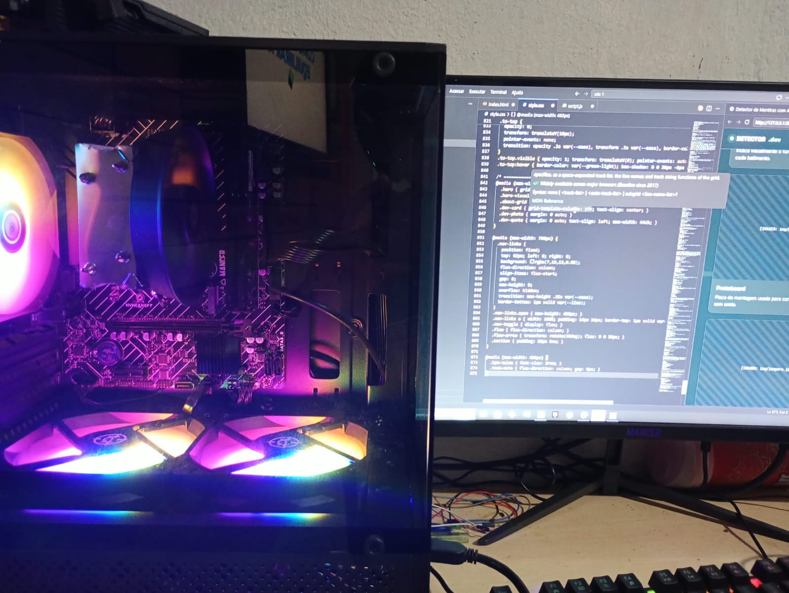
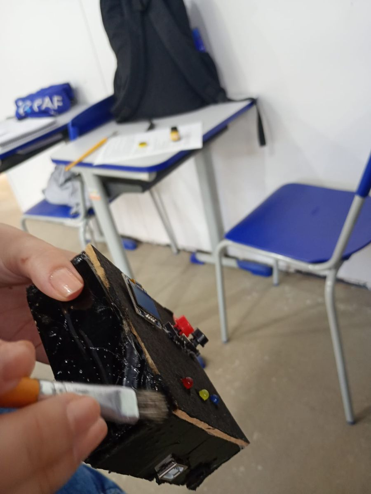
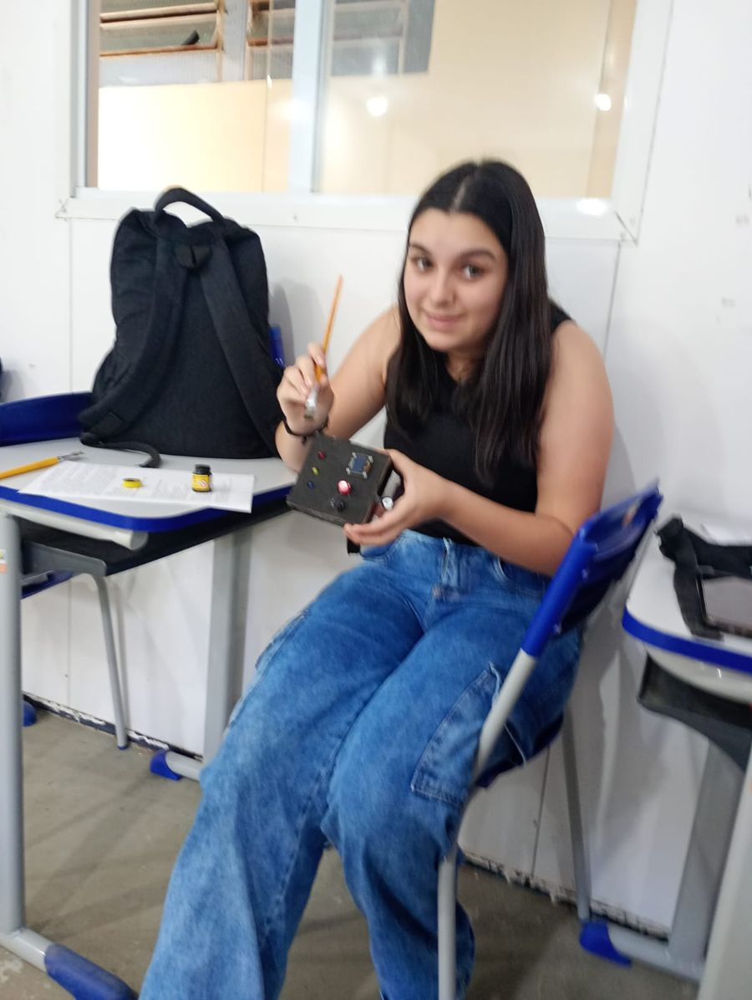
Limitações
- O projeto é experimental.
- A frequência cardíaca não determina sozinha se alguém está mentindo.
- A ansiedade pode alterar os batimentos.
- O medo pode alterar os batimentos.
- O nervosismo pode alterar os batimentos.
- O projeto não é um polígrafo profissional: usa só o pulso, enquanto os profissionais medem também respiração e suor.
- O resultado compara apenas duas médias de BPM (antes e depois da pergunta), com margem de 3 BPM — por isso é uma demonstração, não uma prova.
- O KY-039 é sensível a movimento, luz ambiente e à pressão do dedo.
O nosso detector realmente detecta mentiras?
Não exatamente. O projeto detecta alterações fisiológicas que podem ocorrer durante uma situação de estresse ou nervosismo. A interpretação dessas alterações não permite afirmar, sozinha, que uma pessoa está mentindo.
Conclusão
Ao longo do desenvolvimento deste projeto, aprendemos e aplicamos conhecimentos de:
Agradecimentos
Este projeto não foi feito sozinho. Deixo aqui o meu muito obrigado a todos que ajudaram a transformar uma ideia em um aparelho de verdade.
Ao professor Flakilin e Rafaela
Pelas orientações, pela paciência e por ensinarem a testar, errar, corrigir e tentar de novo.
À minha família
Pelo apoio que me deram enquanto eu fazia o projeto.
Aos colegas
obrigado as todos que me ajudaram a desenvolver esse projeto, todos que testaram e brincaram com ele.
queria dar um ênfase para 2 alunos que me ajudaram bastante nesse projeto, que foram... a Giovannam e o Jhonatam. cada um deles teveram a sua contibruição, mas no final de tudo eu queimei os dois com o ferro de solda.
A você que prestou a atenção em mim
Obrigado por conhecer o meu projeto.
Sobre Mim
João Emanuel
Sou João Emanuel, estudante do ensino médio e apaixonado por tecnologia e programação. Tenho interesse em aprender cada vez mais sobre informática, desenvolvimento de sites, Arduino e novas tecnologias. Gosto de transformar ideias em projetos práticos e criativos, sempre buscando aprender algo novo e evoluir nos meus conhecimentos.
"Não preciso saber tudo; só preciso ter coragem para aprender e continuar tentando."